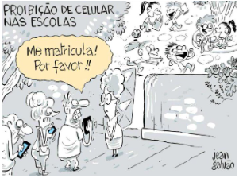
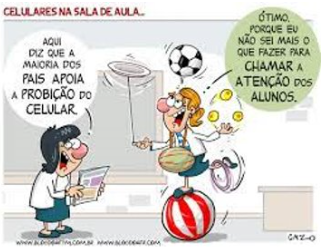
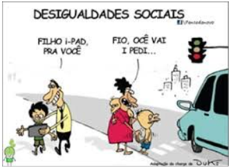

Formação em rede
Celulares nas escolas: normativas,
uso pedagógico e desafios

30/51
FAMÍLIAS E COMUNIDADES: PROMOVENDO O USO CONSCIENTE DA TECNOLOGIA
- A participação ativa das famílias é fundamental para o sucesso de iniciativas que buscam promover o uso consciente da tecnologia entre crianças e adolescentes. Embora muitos pais reconheçam que o uso excessivo de celulares pode prejudicar a saúde, nem sempre estão cientes de outros riscos, como a exposição a conteúdos inadequados ou a comunicação com estranhos.

- Além disso, a proibição total do uso de celulares nas escolas, sem estratégias claras de comunicação entre famílias e instituições, pode gerar insegurança, especialmente para aqueles que dependem desses dispositivos para acompanhar a rotina e o bem-estar dos filhos.
- É essencial que os Educadores estabeleçam uma comunicação clara e assertiva com as famílias, explicando os motivos e benefícios da restrição ao uso de celulares, bem como orientando sobre como promover hábitos saudáveis de tecnologia em casa.
- A educação para o uso responsável da tecnologia deve ser uma abordagem integrada, envolvendo escolas, famílias e comunidades.
- Isso inclui estabelecer limites claros, criar espaços de diálogo sobre saúde digital e incentivar atividades que vão além do ambiente virtual, como leitura, estudo e interações no mundo real.

- Para alcançar um equilíbrio no uso da tecnologia, é necessário que toda a sociedade participe desse esforço.
- No entanto, em um país como o Brasil, onde a desigualdade social é imensa, muitas famílias enfrentam dificuldades diárias para garantir o básico para sobrevivência, o que torna mais difícil pensar em questões como o uso saudável da tecnologia.

SÃO PAULO, 2025b; SBP, 2024; UNESCO, 2024; UNICEF, 2024; WHO, 2023.